Scattered prerelease singles continue to gradually make their way to me from around the world. At 63 out of 80, the binder pages are really starting to fill out. Unfortunately, at this stage of the hunt the concept of shipping consolidation has gone out the window—the orders I'm placing now are for individual missing singles.
Singles…and more singles
Alas, this scattershot approach comes with its own set of risks beyond just the price of postage. I have finally had my first instance of a seller listing a card as a stamped prerelease promo, and sending the regular foil version instead.
These things happen. I'm sure most MTG players do not pay as much attention to card treatments as I do. That said, the foil version of this card is only worth 10c, so I requested a refund.
The seller refunded the article value promptly, but not the €1.55 spent on postage.
I chose not to pursue the difference. The cost of postage exceeds the value of the card itself, and I was, in fact, missing the regular foil version anyway. The seller was gracious enough to let me keep it.
Hopefully this is an isolated case, but it highlights the underlying problem with trying to collect prerelease cards: I am reliant on sellers noticing the 2025 stamp and listing their singles accurately. At scale, that dependency introduces friction, and occasional errors become inevitable.
I've already ordered a replacement using the refund amount. Time to wait and see if the next one arrives as described
The previous post is a tough act to follow when it comes to card acquisitions.
My hunt for all 80 prerelease cards continues apace. Today's postal delivery brings me to 48 out of 80 with a lightly played copy of Fire Lord Zuko.
One of my more interesting recent pickups was a foil copy of Earthbending Student. What is so interesting about a TLE uncommon, you might ask? Strangely, this card only comes in foil. Apparently the non-foil version was originally announced as part of the Beginner Box spoilers, but it cannot be found in Beginner Boxes or in Jumpstart Boosters. This card only exists inside Collector Boosters, where it is one of many possible TLE foil uncommons. As a result, its effective pull rate is lower than most mythics, and the prices on the secondary market reflect this.
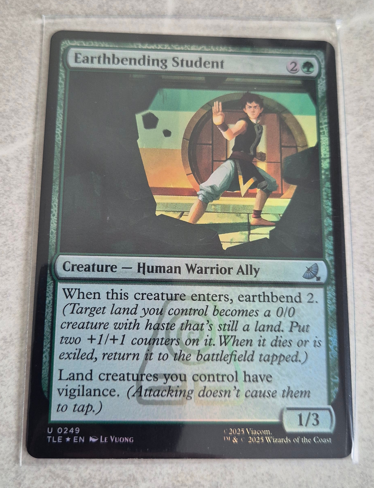
Another foil-only card for my collection
I also got an opportunity to use my new checklist tool today. I popped into my LGS to check if they had any new singles for sale, and I'm glad to report I did not accidentally buy any duplicates this time. Instead, I picked up an extended art non-foil version of The Cabbage Merchant (TLE; not to be confused with Unlucky Cabbage Merchant TLA). The current price of this card is pretty shocking, but it seems to be seeing a lot of play in Commander decks.
Today's pickups
Overall, I've been making some steady progress. Glad for the opportunity to slow the pace a little and give the collection time to breathe (and my wallet time to recover).
When I pulled a 2025-stamped Avatar Aang promo at my home prerelease event last November, my friend warned me against trying to collect the set. He had given up on physical cards years ago, switching to MTG Arena and having not looked back. He had shown me the price of launch-week listings for the Avatar UB headliner card: a borderless raised foil version of the same card. I blinked, at the time not knowing exactly what I was looking at or why it was required. I would later come to realise this was my first and final warning against collecting this MTG set.
The Raised Foil Avatar Aang is a true grail. Found in less than 1% of English-language Collector Boosters, this double-faced card was illustrated by the original show's co-creator, Bryan Konietzko. It is card #363 of 394 in the TLA set. There is only one treatment: the patterned Raised Foil. However, the card itself comes in various other printings: the base card, #207 (non-foil, traditional foil, and the aforementioned prerelease stamp foil); and the "Booster Fun" variant #308 (non-foil and traditional foil; part of the "Book 3 Scene" series). From a player's point of view, the Raised Foil is therefore purely aesthetic. If you want to play with this card in your MTG deck, you can, and for a low cost. However, for a collector, this is one of six treatments; one of three TLA card numbers. It is the structural keystone that makes the TLA set completable.
If I truly wanted to collect every card in this set, then my collection wasn't just incomplete in the absence of the Raised Foil—it was contingent upon securing one. I had to capture the Avatar.
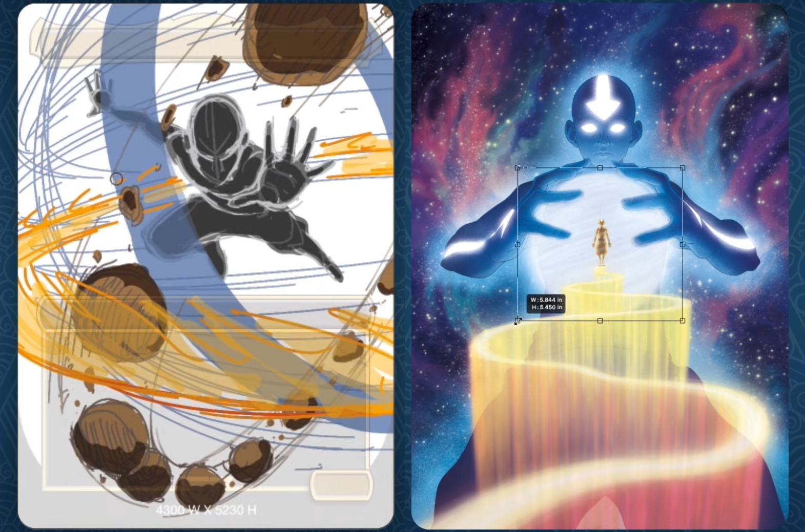
Work in progress snapshots of the artwork by Bryan Konietzko
This may seem like a hostile design philosophy from WotC. It is. However, it is bounded in a way that other recent Universes Beyond sets have not been. The most infamous example is the serialised 1 of 1 version of The One Ring card from The Lord of the Rings: Tales of Middle-earth set, sold to Post Malone for $2.64M USD back in 2023. A less egregious but more recent example is the golden Traveling Chocobo cards from the FINAL FANTASY set, which are also serialised, this time limited to 77. You can check out the Golden Chocobo Tracker app (external link) to see some of the insane prices that some of these go for. In comparison, the Avatar set has zero serialised cards, and only five CB chasers: the four textless Neon Inks, and the Raised Foil.
With this framing in mind, I started to seriously consider whether or not to purchase this card in early January. The market was thin. The sales history showed a few sporadic transactions, with a steep drop in value since the initial launch hype. Most listings remained clustered at anchor prices which no longer reflected the market reality. With such a large gap between prices and completed sales, I began to do something which is seemingly not the norm for Cardmarket—I began to message sellers privately to negotiate. Despite watching the listings for a long while, I was a bit nervous about how this would come across. I certainly didn't want to burn any bridges, and I know of MTG sellers who insta-block buyers who try to haggle on price. However, this card does not operate in a functional TCG economy. In such a niche market, price discovery is done in steps rather than trends, and transactions only happen when both sides decide it's time.
Last week, I was finally in a position to make a serious four-figure offer. It cleared instantly. The final price was in line with the small number of confirmed sales that preceded it. Maybe the floor will drop further. For me, it was the price of closure.
The seller was a professional and a pleasure to deal with. The parcel was in my hands within the week, tracked and insured.
The frontThe back
When it landed, it somehow felt smaller than I had imagined it. Obviously it is the same size as every other MTG card, so I'm not sure why I felt that way. Maybe all those hours staring at close-ups made the artwork look busy when viewed at a normal scale. After a quick photoshoot, it went straight into a Dragon Shield and into the binder. No, I didn't double-sleeve it or place it in a toploader. It lives in binder number two now, alongside all the other cards. In actual fact, the binder page it went into is practically empty; #363 sits between the Neon Inks and the long procession of extended art cards in the TLA set. With the grail secured, I can now work on gradually filling the rest of those pockets with confidence.
Funnily enough, the Raised Foil arrived alongside one of the prerelease promos I ordered. A copy of Iroh, Tea Master, sold for 70c plus shipping. Quite the contrast for those two cards to enter the binders on the same day. Both are structurally necessary for completing my collection project, and both will now sit quietly next to each other, wrapped in polypropylene. Two more cards ticked off the list today.
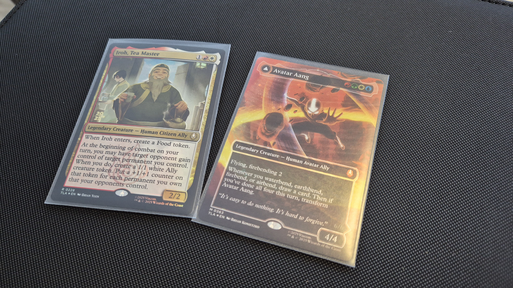
The Avatar and Uncle Iroh entered the binders together
A week ago, I found myself once again browsing the limited selection of singles in my LGS. I have begun to haunt that place in search of Avatar cards—maybe there aren't many being traded in, but it seems like they sell instantly. I can never seem to find any.
As luck would have it, I found two on this occasion. To date, I have been tracking my collection using a printed checklist (external link) put together by Reddit user JonODonovan. This pen-and-paper solution worked pretty well for my long, floor-bound sessions spent sorting stacks of cards and organising three massive binders. It does not lend itself to digitised tracking very well. My solution has been to quickly take photos of these 28 A4 pages any time I'm going anywhere in-person to trade.
As it happens, my latest photos were not up-to-date. Both cards I purchased were duplicates. In a set of 1.7k cards, two dupes is a rounding error at most–but it felt like a gut punch. My system needed to be properly digitised.
My initial solution was, naturally, an Excel spreadsheet. I don't actually have a Microsoft Office subscription, and I didn't necessarily want to use Google Sheets for hosting, so somehow I ended up creating an .ODS file in LibreOffice Calc. This exercise helped me define the list. Following my recent shock discovery of 54 additional art cards I hadn't previously been tracking, the grand total finally came into view: 1,726 cards. That is my goal.
Turns out spreadsheets are not exactly a web-friendly format (outside of Google Sheets), so I ultimately decided to create a static webpage instead. Behold, the Grandmaster Set Checklist. This tool allows you to filter by set code, card number, card name, treatment, and ownership. It lists every Avatar UB card, playable and non-playable, in every extant treatment.
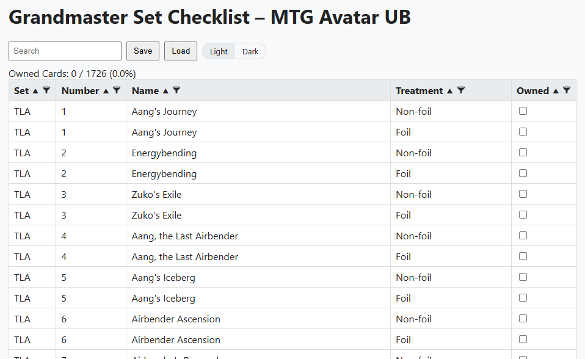
Screenshot of the checklist tool
There is no account system; the tool is entirely client-side. Your checklist can be saved locally as a .JSON file to keep track of what cards you own. In fact, this tool can be run completely offline if you want to download the contents of the website from the GitHub repo (external link).
After painstakingly ticking each box in my new tool, I finally landed on a number my A4 sheets had never revealed to me: 982 / 1726 (56.9%). I'm officially past the halfway point. Before today, my collection was vibes-based; the physical collection was quantified in memory and paper notes. Digitalisation has collapsed that ambiguity into a list of 982 discrete, indexed, versioned print objects. It will take me a little while to recalibrate.
Anyway, I won't be picking up duplicates next time I spontaneously decide to flip through a trade binder.
I have previously discussed art cards a couple times on this blog. I obtained the full set of twelve ATLE art cards when I opened two Scene Boxes at Christmas, and I acquired a few from the ATLA set last month when I cracked far too many Collector Boosters. What I did not realise at the time was the true scope of this set.
Art cards are non-playable collectibles, usually included as a possible pull in Collector Booster packs. They are enumerated on the back, with 54 cards in the ATLA series. What I have just discovered is that the ATLA cards actually come in two versions: the regular art card, and a rarer "Gold Signature" treatment. Similar to a prerelease stamp, these Gold Signature versions feature the artist's signature imprinted in gold. In circumstances where I guess the artist didn't provide their signature, a golden Planeswalker symbol is stamped on the card instead. These two versions don't seem to be properly documented on Scryfall; it currently only has scans of the Gold Signature cards.
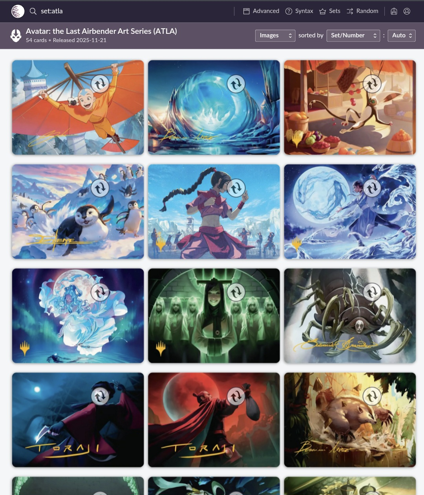
Scryfall search results for ATLA only returns the Gold Signature versions
This doubles the total number of ATLA cards in the grandmaster set, bringing the total number of art cards to 120. Just when I thought I had finalised my binder layout, I have had to reorganise it slightly to make room for these additional empty pockets. I compressed the prerelease section, leaving plenty of room at the back of the third binder in case I come across any more surprises.
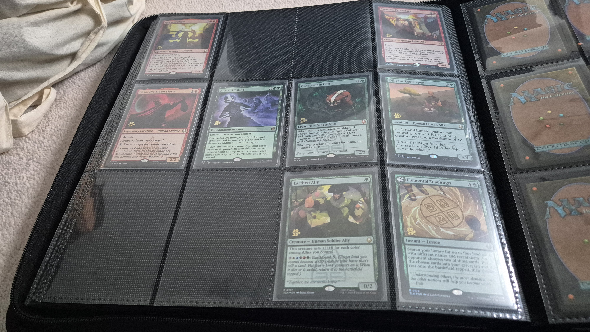
From a one-sided layout…
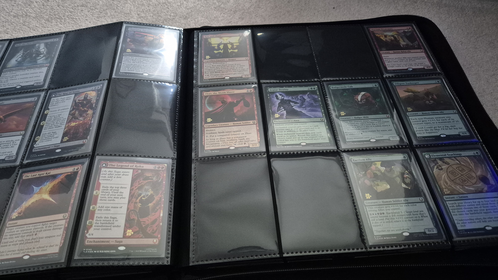
…to double-sided.
In other news, I'm now on 38 out of 80 prerelease promos. With Wan Shi Tong now under my belt, I believe I have obtained all the most expensive mythics. I've begun the process of slowly hunting down and ordering the rest. The first two prerelease lands have been slotted, so I might focus on tying down the rest of those next. Gonna have to wait till payday though.
I opened a Commander Bundle just over a month ago, primarily to obtain five of the thirteen TLE promo cards exclusive to this product.
About a week ago, I pressed buy on the ten other singles via Cardmarket's Shopping Wizard. They have been slowly filtering in from different sellers, with the final two landing today. Between the postage, their rarity, and the fact that these cards are all reprints of playable Commander staples, this is possibly the most expensive binder page in my collection.
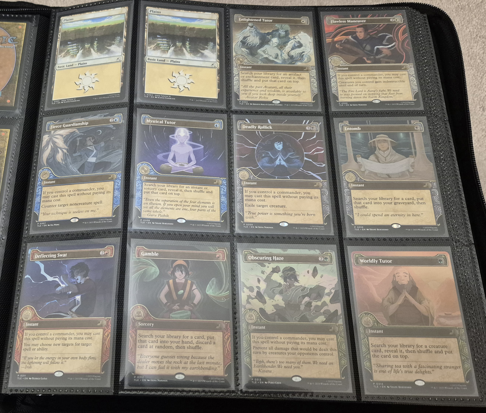
Tutorial lands transition into the full run of Commander Bundle exclusives
Speaking of expense, I also secured a prerelease-stamped copy of Badgermole Cub. This card is seeing a lot of play, so I expected it to be one of the most challenging prerelease cards to acquire.
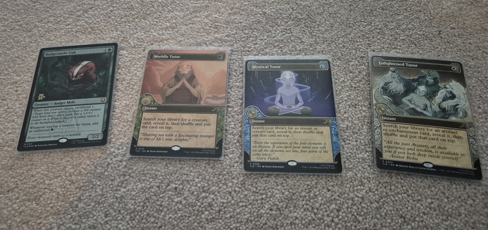
Some of the recent singles
I actually got the Cub at a decent price. It was seriously well protected in transit: rather than the usual piece of protective cardboard, it came inside a perfect-fit inner sleeve, inside an outer sleeve, inside a toploader, inside a sealed plastic wrapper. Felt like opening a sealed product rather than a secondhand playing card.
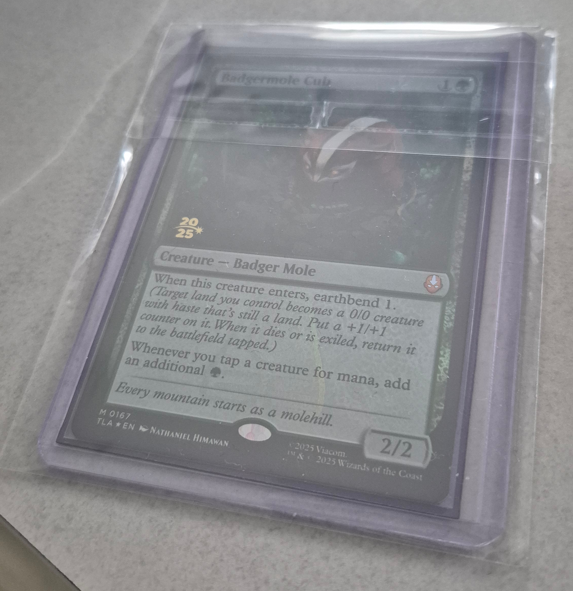
The Badgermole Cub's bulletproof shell
I should note that this wasn't even the most expensive prerelease card I purchased this month. I really struggled to find any reasonably priced listings for the stamped Wan Shi Tong, Librarian. I tried negotiating with a few unreasonable sellers and got nowhere. Eventually, a copy turned up at market value and I managed to jump on it. It should be arriving in the post any day now—watch this space.
For the feast day of Saint Valentine this year, I found myself inside HMV.
The outlet was running a cute "blind date" promotion where you could buy a mystery DVD or Blu-ray, covered in wrapping paper and sold at a discount. I picked one up for later: Horror / Brothers / Deep South.
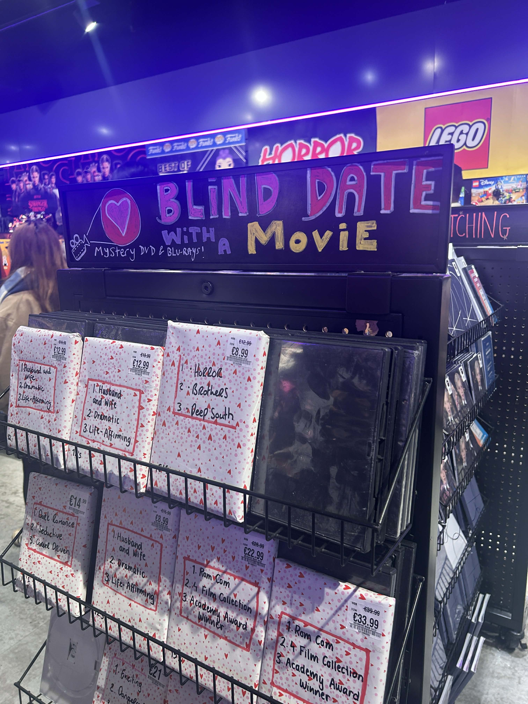
His Master's Voice really stepping up their game
While we were there, I was treated to a romantic Collector Booster, gifted to me by my Valentine. My wife has been very supportive of this project, and in fact I may have gotten her hooked on cracking CBs in search of the Avatar.
Alas, Cupid was not kind. After opening a full box of CBs and skimming the bulk foils from two others, the return on investment from any single pack is now very low for my collection. I already have most of the easier pulls from these packs, so it's a gamble each time whether I hit something new. I got a few new cards, but the big pulls were unfortunately duplicates. Is this finally the end of sealed?
Fittingly, the mystery Blu-ray was also a duplicate: 2025's Sinners, which we already own in 4K UHD. Unusual enough these days to buy physical media, never mind buying it twice! It is an excellent movie though.
Anyway, we found something else to watch. Lessons learned when it comes to blindly buying mystery products on the high street.
Okay, okay, I promise I'll stop with the sealed product.
It's just that I'm missing so many non-foil TLE cards, and these can only be found in Jumpstart Booster packs. When I saw a box of 24 Jumpstart packs going cheap on Amazon, I figured it would help me cover off most of the bulk. Prior to this box, I had only opened two Jumpstart packs in total.
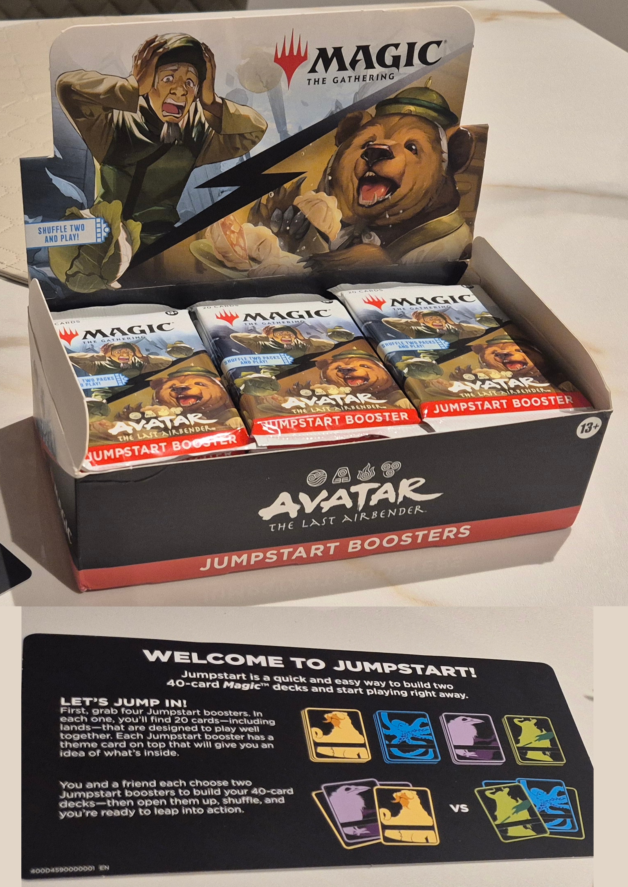
The contents of the Jumpstart box
The thing about opening a Jumpstart pack compared to a Play Booster or Collector Booster is that it's a relatively boring affair. There is no chance of pulling a rare card from a Jumpstart Booster. The contents are not random; instead, each Jumpstart pack follows a randomised theme, with a set list of spells and lands for each theme. The idea of this format is for both players to open two Jumpstart packs each and shuffle them together for an instant deck.
Cracking 24 of these back-to-back therefore felt a bit sacrilegious. That's six drafted games down the drain, with no play value. The good news is that I made huge stonks: of the 24, I only hit three duplicate themes.
The highlight for me was pulling a non-foil version of That's Rough Buddy. I now have it in both treatments. Maybe I should look at obtaining copies in every language next?
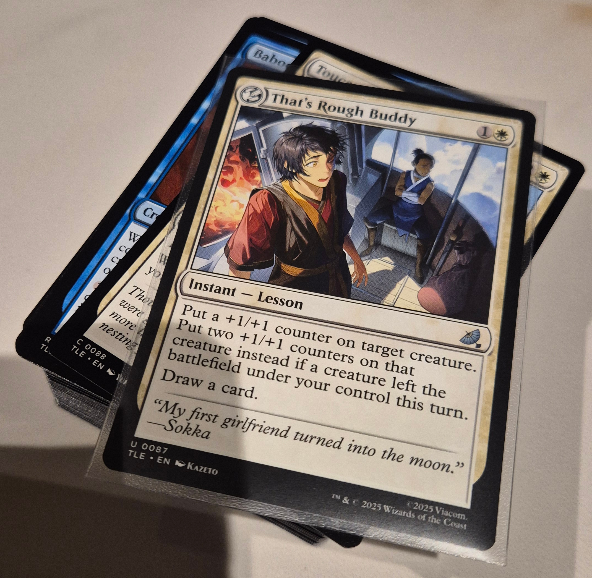
Is the meme getting old yet?
The nice thing about so little theme duplication is that I'm now sitting on 23 of the 46 JTLA "Front Cards". These card-shaped non-playables serve no function aside from indicating the theme of the Jumpstart Booster they came from. The not so nice thing about this number is that I'm now firmly in the danger zone: there is now a 50/50 chance of hitting a duplicate theme every time I open a Jumpstart in future. Rather than face those diminishing returns, I will simply have to acquire the rest of the TLE set as singles.
I just spent the day sorting through a cheap lot of loose bulk foils I bought on a local marketplace.
The listing was from France, but the cards are in English: the remains of two boxes of English language Collector Boosters (24 packs total). This may seem strange given that Avatar UB also received a French localisation, but the only Collector Boosters that have a chance at containing the Raised Foil Avatar Aang are the English packs. There's little doubt that the seller is on the hunt for the Avatar, and is likely fuelling that search by selling off unsorted bulk for cheap.
Stacks and stacks of bulk
It was quite a bit of work to sort through everything. Somewhat unsurprisingly, the lot had been stripmined of any value. It was entirely made up of TLA commons, uncommons, lands, and tokens. Not a single TLE foil to be found. I knew that the rares would've been skimmed, but I was a bit disappointed to not make any progress on the TLE front, given that those foils can only be found in CB packs.
That said, the sheer mass of bulk contained plenty of foils I was missing. I've now plugged nearly every single hole for TLA commons, uncommons, and lands.
The tokens in particular were an unexpected windfall. I have now obtained every single foil token, bar one: the foil Treasure token, TTLA #22. For anyone unfamiliar, the token cards in this set are double-faced, so for instance an Ally token can be flipped and used as a Food token instead. For my binder, this effectively means I have to obtain two copies of each token in foil, since one physical printing counts for two tokens. From what I've seen, the printings seem to be consistently paired, though there is some level of variation. Interestingly, for the missing Treasure token, I have only seen it paired with one other: TTLE #1, the Aang, Awoken Avatar (Marit Lage) token. I'm sure the very mention of TLE ensured no copies were included in this bulk lot, but it won't be difficult to track down another foil at some point. The only other TLE token is TTLE #2 (Soldier), which apparently only comes in non-foil.
I attended my first ever card show today. I brought a wad of cash and some cards to trade, in the hope of securing fat stacks of singles for my collection without paying postage. I was mostly afraid of sharks; in hindsight, what I should have been afraid of was a lack of product. The event was mostly Pokémon, with very little MTG on offer.
Plenty of Pokémon product on display, but not much MTG.
There were only five booths stocking MTG:
One booth had a single binder page dedicated to MTG singles, but no Avatar cards.
One had random sealed products (Beginner Box, Scene Boxes) but no singles.
One guy had a small shelf of singles but left his MTG binder at home(!) and regretted it. Apparently we were the third set of buyers to ask him about it.
One gent was kind enough to let us thumb through his loose stack of unsleeved retro bulk.
Finally, we found a single booth stocking both sealed packs and MTG Avatar singles.
I ended up purchasing a Badgermole Cub alt art and an Appa, Steadfast Guardian prerelease stamp from that final vendor. The price of a CB booster was a little rich for my blood, but at least we didn't leave the con empty handed. Interestingly, this is actually the first prerelease card I've found in the wild. Even the ones I pulled myself came from kits I had to import after my LGS didn't save me one.
I'm glad I bought the early bird ticket to snipe what limited singles were there. It was a nice day out, but we didn't stick around.